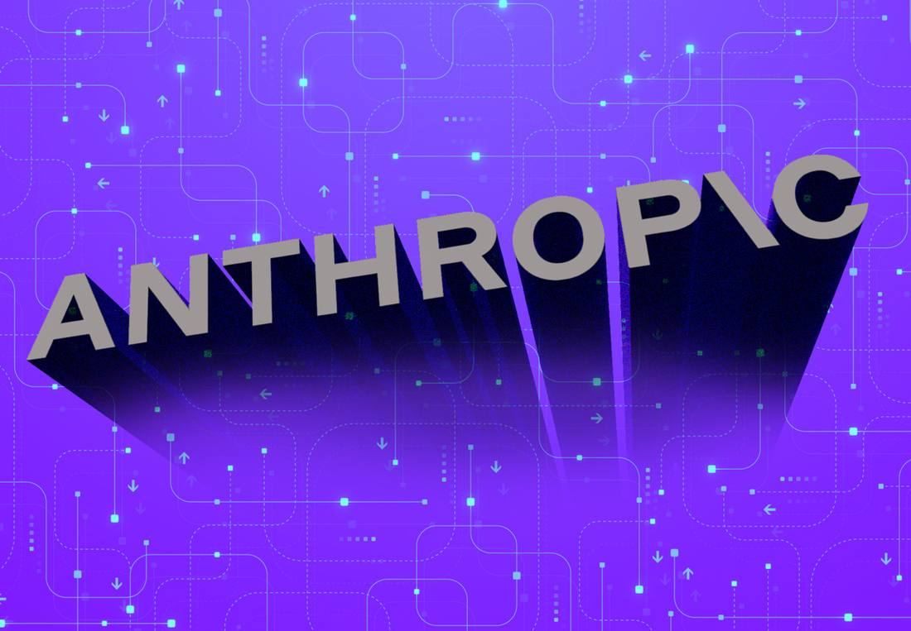

Anthropic Slides Toward Its IPO Price on Day Two as the AI Trade Keeps Falling
Anthropic fell about 10% in premarket trading on Friday, sliding toward its $83 IPO price after closing its record debut up 17% at $97.17. Reuters put the early decline at 6% to $91.24; later snapshots showed about $85 to $87. The slide came as the broader AI trade kept falling, with Nasdaq futures pointing lower after a more than 2% drop on Thursday.

- 01THE SLIDE — Anthropic fell about 10% in premarket trading on Friday, November 20, 2026, sliding toward its $83 IPO price; Reuters' early snapshot put the decline at 6% to $91.24.
- 02THE DEBUT — The stock opened Thursday at $111.50, touched $115, and closed at $97.17, up 17% from the offer price but 13% below its opening price.
- 03THE RECORDS — Anthropic raised about $81 billion in the largest IPO on record; retail investors traded about $772 million of its shares on debut day, the most since Vanda began tracking in 2012.
WHAT HAPPENEDWhat Happened
Anthropic shares fell in premarket trading on Friday, November 20, 2026, pulling back a day after the largest initial public offering on record, Reuters reported. The stock was at $91.24 in Reuters' early snapshot, down 6% from Thursday's close, giving Anthropic a fully diluted valuation of about $1.7 trillion and a market capitalisation of $1.2 trillion based on shares outstanding.
The slide deepened through the morning. MarketWatch reported the shares down more than 12% in premarket action at $84.98, falling closer toward the $83 IPO price, while Barron's put the decline at 10.6% to $86.83 ahead of the opening bell. Anthropic had opened its Nasdaq debut at $111.50, touched $115, and closed Thursday at $97.17, up 17% from the offer price but 13% below its opening price.
The debut itself set records that now look like the high-water mark. Anthropic raised about $81 billion, and retail investors traded about $772 million of its shares on Thursday, the most for an IPO debut since Vanda Research began tracking the data in 2012, Reuters reported. The offering closed on November 20 with the underwriters' greenshoe exercised in full, taking the total to $93.5 billion. Jefferies trading-desk analyst Jeffrey Favuzza told MarketWatch that the continued selling pressure in the last 24 hours felt more to do with the Anthropic IPO than with technology earnings.
The wider AI trade offered no shelter. Wall Street's main indexes ended sharply lower on Thursday, the Nasdaq fell more than 2%, and futures pointed to another day of declines on Friday, Reuters reported. The SPDR Select Sector Technology ETF entered bear-market territory on Thursday, more than 20% below its October peak. Reuters also noted that Apple is developing an AI agent that can perform tasks on behalf of users, entering a market already being pursued by OpenAI, Anthropic and Meta, citing Bloomberg News.
WHY IT MATTERSThe debut priced the future; day two repriced it
The first day answered one question: whether the market would pay $83 a share for a pure-play AI lab. It would, and then some, opening 34% higher. Day two is answering a harder one: whether that price holds once the listing-day buyers stop buying. A stock that gives back most of its debut pop before the second open, and drags the sector with it, is not a verdict on the company. It is a verdict on the price.
Anthropic is now the market's live proxy for the AI trade, and the proxy is pointing down. The debut was supposed to be the validation event; instead it became the event investors sold into. The focus now shifts to a potential OpenAI listing next year, Reuters reported, which would be the next major test of investor appetite for AI stocks.
WHAT TO WATCHWhether the $83 line holds
Watch first whether the shares hold above the $83 IPO price once regular trading opens. A break below the offer price on day two would turn a stumble into a statement about how much of the debut was listing-day demand. The stock repeatedly tried to stabilise around $90 to $92 overnight before breaking lower toward $87, according to InvestingLive's overnight price action.
Watch second whether the selling stays in Anthropic or keeps spreading. The Nasdaq was already down about 5% for the week at Thursday's close, and the technology ETF is in bear-market territory. A sustained Anthropic decline would deepen concerns over lofty valuations and the massive AI spending behind them, Reuters reported.
SIGNAL JUDGMENT — ANALYSISThe debut was the celebration; day two is the price check
Tokenta Signal's judgment: Anthropic's debut was meant to settle the argument about AI valuations, and for one session it did: the market paid $83, then $97.17, and called that a success. Day two is the bill arriving. A stock that slides toward its IPO price before its second open is not a company in trouble; it is a price that was set by listing-day demand, not by buyers who intend to hold. The question now is not whether Anthropic was worth its price. It is whether the rest of the AI trade can hold its own while its newest proxy gives the gains back.
WHAT REMAINS UNCERTAINWhat Remains Uncertain
EVIDENCEEvidence
Anthropic shares fell in premarket trading on Friday, November 20, 2026, sliding toward the $83 IPO price a day after the largest IPO on record closed up 17% at $97.17; Reuters put the early decline at 6% to $91.24, with later snapshots showing the slide deepening toward $85.
PRIMARY SOURCESPrimary Sources
- Reuters: Anthropic's post-debut stumble delivers reality check for AI trade
https://www.reuters.com/business/anthropics-post-debut-stumble-delivers-reality-check-ai-trade-2026-11-20/ - MarketWatch: Anthropic's stock slides closer to IPO price and drags down the AI trade
https://www.marketwatch.com/story/anthropics-stock-slides-closer-to-ipo-price-and-drags-down-the-ai-trade-cc43a0c4 - Barron's: Anthropic Stock Falls 10% as Reality Quickly Hits Home
https://www.barrons.com/articles/anthropic-stock-price-ipo-falling-04259c4c